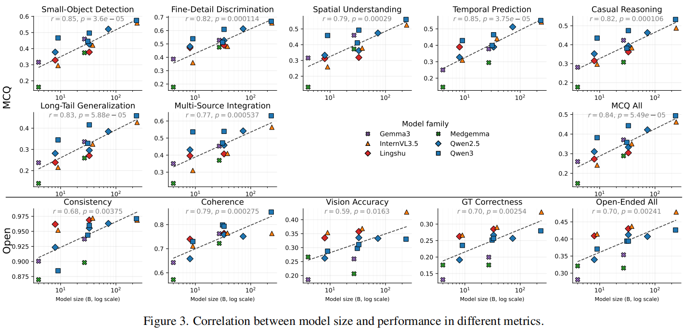
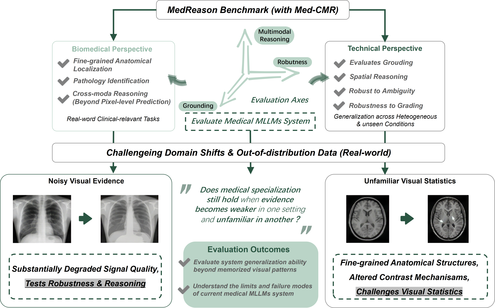

Updates
MedReason is a MICCAI challenge focused on designing medical MLLM reasoning systems that transcend basic classification and segmentation. Built upon the Med-CMR framework with the addition of Out-of-Distribution (OOD) data, it rigorously evaluates model robustness and fine-grained anatomical grounding. By providing a transparent evaluation of clinical reasoning, the challenge aims to guide the development of reliable and specialized medical AI.
How Far Are We from Expert-Level Complex Medical Reasoning?
From Med-CMR's observation: Larger medical and general models improve reliably on structured multiple-choice reasoning, but the gains in open-ended evaluation are much more limited for visual grounding and factual correctness.

MedReason Benchmark
To dive down into recent MLLMs reasoning ability in real-world clinical scenarios, we proposed MedReason Bench/Challenge to encourage novel medical MLLMs reasoning system to discuss and tackle the problem “Does medical specialization still hold when evidence becomes weaker in one setting and unfamiliar in another?”

TASK : Multiple-choice and open-ended visual question answering
Participants build a medical image-language system that answers both multiple-choice and open-ended questions from medical images and optional context, spanning anatomical and pathology-oriented clinical reasoning. Click the blocks for more details.
Public benchmark + private OOD test
The challenge combines a broad Med-CMR backbone with additional low-dose X-ray and 7T brain MRI evaluation.
MCQ and open-ended scoring
Performance is assessed through accuracy, ground-truth correctness, and visual accuracy across public and private test settings.
Docker submission and documented resources
Teams submit one Dockerized system for the official ranking and must clearly document any external public resources used.
Challenge schedule
Launch
Website goes live and registration opens.
Training data release
Public challenge materials and train split are released.
Validation data release
Validation split and development instructions are opened.
Pre-evaluation
Validation server opens and iterative submissions begin.
Final submission
Registration closes, final Docker submission is frozen, and results are prepared.
Workshop and leaderboard
Challenge workshop is held and the public leaderboard is released.